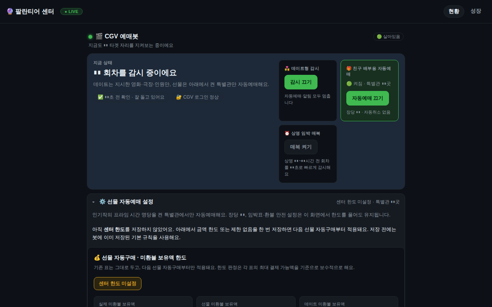

실전 가동
예매 자동화
💵 실돈Claude Code
CGV 예매봇 CGV Ticket Bot
CGV 인기 회차의 취소표와 명당 좌석을 24시간 감시하고 자동 예매·결제까지 진행하는 봇
인기 영화 회차의 명당 좌석이 취소로 풀리는 순간을 감시해 텔레그램으로 알리고, 현재는 좌석 확보와 간편결제 입력까지 무인 완주하는 모드로 운영한다.
Xvfb 가상 디스플레이에서 CDP 크로미엄을 상시 띄워 로그인 세션을 유지하고, 웜풀(미리 붙여둔 브라우저)과 오픈런(예매 오픈 순간 선점) 경로, 취소 API 분석 등 여러 우회·최적화를 쌓았다.
동시 보유·금액·일일·영화당 다층 한도와 환불 여유 게이트, 이중키 같은 실돈 안전장치가 핵심이다.
프로젝트에서 가장 큰 저장소로 460커밋, 파이썬 약 14만 줄, 테스트 약 4천 개 규모이며 유닛이 40개 넘게 설치돼 있다.
실사고를 거치며 테스트 통과가 실제 동작을 보장하지 않는다는 교훈을 반복해서 얻었다.
- 기간
- 2026-07 ~ 2026-10-05
- 기술
pythonplaywrightchromium-cdpxvfbsqlitetelegramsystemd- 코드
- 138,937 줄
- 테스트
- 3,974 개
- 커밋
- 460
- systemd 유닛
- 12 개
- 저장소
- intohumble-ai/cgv-bot (비공개)
세션 9 (Claude Code 9 · Codex 0)마지막 활동 2026-10-09
- 2026-10-09 18:07Claude CodeA4f pc 메모리와 용량 소비 봇
- 2026-10-05 19:58Claude Codecgv봇 무대인사 감시 제외
- 2026-10-05 19:42커밋test(cgv): 결제 연속실패 카운터·매입 정지 플래그 테스트 격리(실 data/ 누출 차단)
- 2026-10-05 19:25커밋feat(cgv): 매입 정책(같은 날 2회차·처음 관 2장, shadow) + 스스로 배우는 감시(밴딧, 기본 OFF) + 장부/좌석기록 극장
- 2026-10-05 19:11커밋fix(cgv): 2차 회의 즉시 버그 — 알림 실패 시 환불 보장·발권 타임아웃 재시작 순서·토큰/점검 경보·결제 연속실패 정지
- 2026-10-05 16:50커밋chore(cgv): 운영 중 설정 커밋(giftradar·watch_targets) — 9/27~ 미커밋 운영 해소(2차 회의 Y7)
- 2026-10-05 00:51커밋feat(cgv): 등급표 생성기 v2 — 시야 편향 수리(앞줄 잠금·관종별 중심·통로 사이드·물리 축·의미 검사)
- 2026-10-05 00:31커밋fix(cgv): 좌석 등급표 17개 시야 기준 재조정 — 앞줄·통로 밖 사이드·맨 뒷줄 강등
- 2026-10-04 16:02커밋feat(cgv): 등급표 생성기 좌석종류 옵션(--include-kinds) + 왕십리 5관 릴렉스시트 등급표
- 2026-10-04 14:57커밋feat(cgv): 명당표 없던 일반관 5곳 자동 등급표 추가(용산 11·12관, 천호 1·3·5관)
- 2026-10-04 13:43커밋fix(cgv): accessToken 만료 시 자동 갱신(프론트 방식) — 자동환불 전면 실패(10/3 오후~) 근본 수리
- 2026-10-04 01:41커밋feat: 교체 24시간 컷·봇 하루상한 제외 + 배부완료 제외 전 표 완전관리(독립 자동환불·데드맨)
세션 제목과 커밋 제목만 표시합니다. 대화 내용·파일·경로는 공개하지 않습니다.
- 취소표·명당 좌석 24시간 감시와 텔레그램 즉시 알림(예매 딥링크 포함)
- 3단 모드 게이트: watch(알림만) / arm(좌석 확보) / pay_ui(결제까지)
- 간편결제 PIN 자동 입력과 PIN 이중키 안전장치
- CDP 크로미엄 상시 유지와 로그인 세션 보존, 지수 백오프 재부착
- 웜풀(브라우저 선부착)과 오픈런 사전 준비 타이머
- 다층 캡: 동시보유·금액·일일·영화당 한도와 환불 여유 게이트
- 좌석 재등장 예측(실측 재등장 시간 기반)과 골든타임 점수
- 무대인사 회차 감시·자동발권 제외 규칙
- 환불 정리(refund-sweep)와 보유표 장부
- 워치독 5분 심박 점검과 브라우저 비대화 감시
- 팔란티어 센터 연동(한도 설정, 인기 관 패널, 판매중 배지)
- 중고나라 판매글 동기화(joongna-seller)용 표 데이터 제공
서비스active
마지막 커밋2026-10-05
데이터 기준2026-10-11 04:45
테스트 수3,974
실적·잔고·수익률은 공개 정책상 표시하지 않습니다(설정으로 켤 수 있음). 상태는 PC 의 빌더가 10분마다 읽어 올립니다.
실제 화면을 찍은 뒤 숫자·식별자를 자동으로 가린 스크린샷입니다.

가짜 데이터로 돌아가는 미니 데모입니다. 직접 눌러보세요. (실 계좌·실 API 와 연결돼 있지 않습니다)
새 창에서 열기 →- 테스트가 except Exception으로 삼키는 루프를 무한 실행해 RAM 6.5GB를 잠식한 것이 '봇 꼬임'의 정체였다(2026-08-10)
- 브랜치는 격리가 아니다: 서비스가 워킹트리에서 직접 실행돼 미검증 WIP 코드가 실발권 무장 상태로 라이브에 들어갔다(2026-08-12)
- 양 끝단만 테스트하면 가운데 배선 한 줄을 지워도 초록불이다. 뮤테이션 점검으로 잡았다
- 테스트가 텔레그램 롱폴을 새게 해 24,348회 호출한 문제를 차단했다
- .env 인라인 주석이 실돈 설정을 무시시키던 버그를 수리했다
- 오픈런 실패 후 theater_ready 데드락을 발견해 수리했다(2026-08-19~20)
- 웜풀 측정 웨이브를 26번 돌려 '발권 0'이라는 결론에 도달해 측정 헛바퀴 방지 규칙(wave-gate)을 만들었다
- 결제가 새 창으로 열리는 사이트 변경에 대응하고 보통관 실발권을 켰다(2026-09-27~28)
이 프로젝트에 등록된 아이디어가 아직 없습니다.